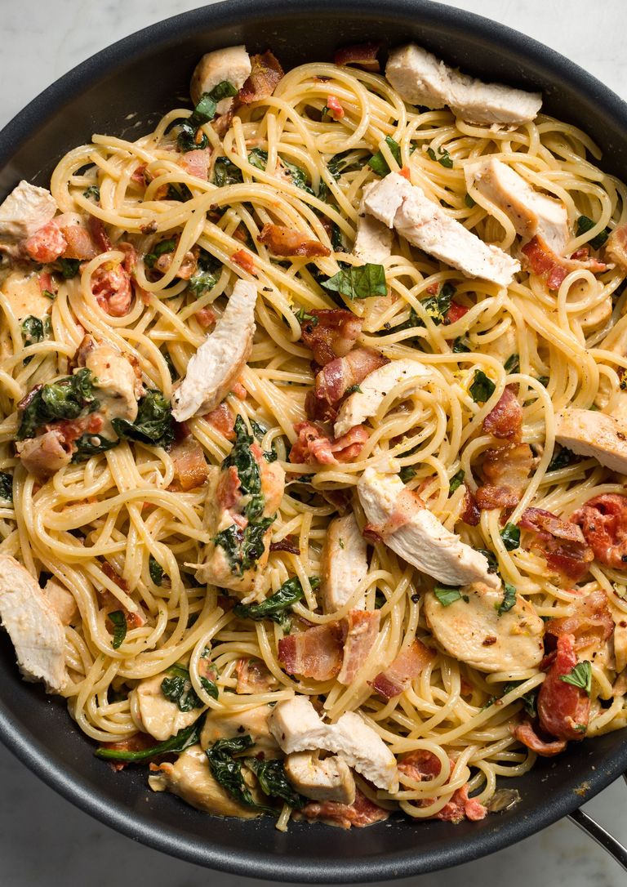

Tuscan Chicken

Description
This chicken is the perfect blend of creamy and spicy. Once
you try it, you will be addicted. Its tender grilled chicken
and perfect pasta will be loved by the whole family.
Ingedients
- 1 pound Chicken
- 16oz pasta
- 1/2 cup heavy cream
- 1/3 cup grated parmesean
- 6 slices bacon
- 1 tbsp minced garlic
- 1 can diced tomatoes
- salt and pepper
Steps
- Boil pasta until tender, about 8 minutes, retain
1/2 cup of pasta water for later use.
- Brown chicken in 1 tbsp of oil untill no longer pink,
about 7 minutes on each side. Then romove from skillet.
- Cook bacon and then drain half of grease
- Add garlic and tomatoes to bacon grease and cook 3 minutes
- Add cream, pasta water, and parmesean. Stir and simmer for 5 minutes.
- Slice chicken and chop bacon then add them and the pasta to the sauce.
- serve immediatly
Return to main Page